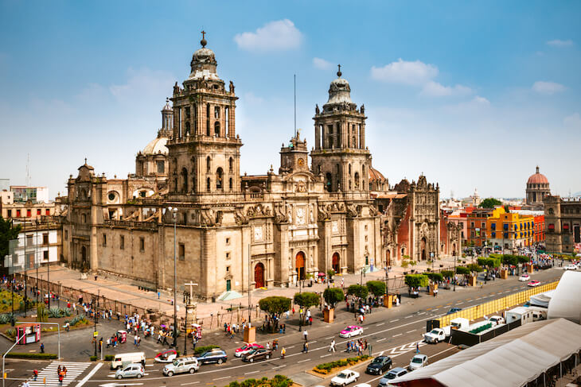

Cidade
do México
A Cidade do México, também conhecida como CDMX ou simplesmente México, é a capital e a maior cidade do México. Localizada no vale central do país, a cidade é um centro cultural, político, econômico e histórico vibrante.
A cidade tem uma rica cena cultural, com uma infinidade de museus, galerias de arte e teatros. O Museu Nacional de Antropologia é um destaque, exibindo artefatos e exposições que contam a história das culturas indígenas do México. A Cidade do México também é famosa por sua vida noturna animada, com uma variedade de bares, restaurantes e clubes para todos os gostos.
É conhecida também por seus parques e espaços verdes. O Bosque de Chapultepec, um dos maiores parques urbanos do mundo, é um oásis dentro da cidade, com lagos, jardins, museus e até mesmo um zoológico. É um lugar popular para relaxar, fazer piqueniques e aproveitar a natureza.
- 
Em resumo, a Cidade do México é uma cidade fascinante que combina história, cultura, gastronomia e vida urbana agitada. Com sua rica herança, arquitetura impressionante e uma infinidade de atrações culturais, a cidade oferece uma experiência cativante para os visitantes.